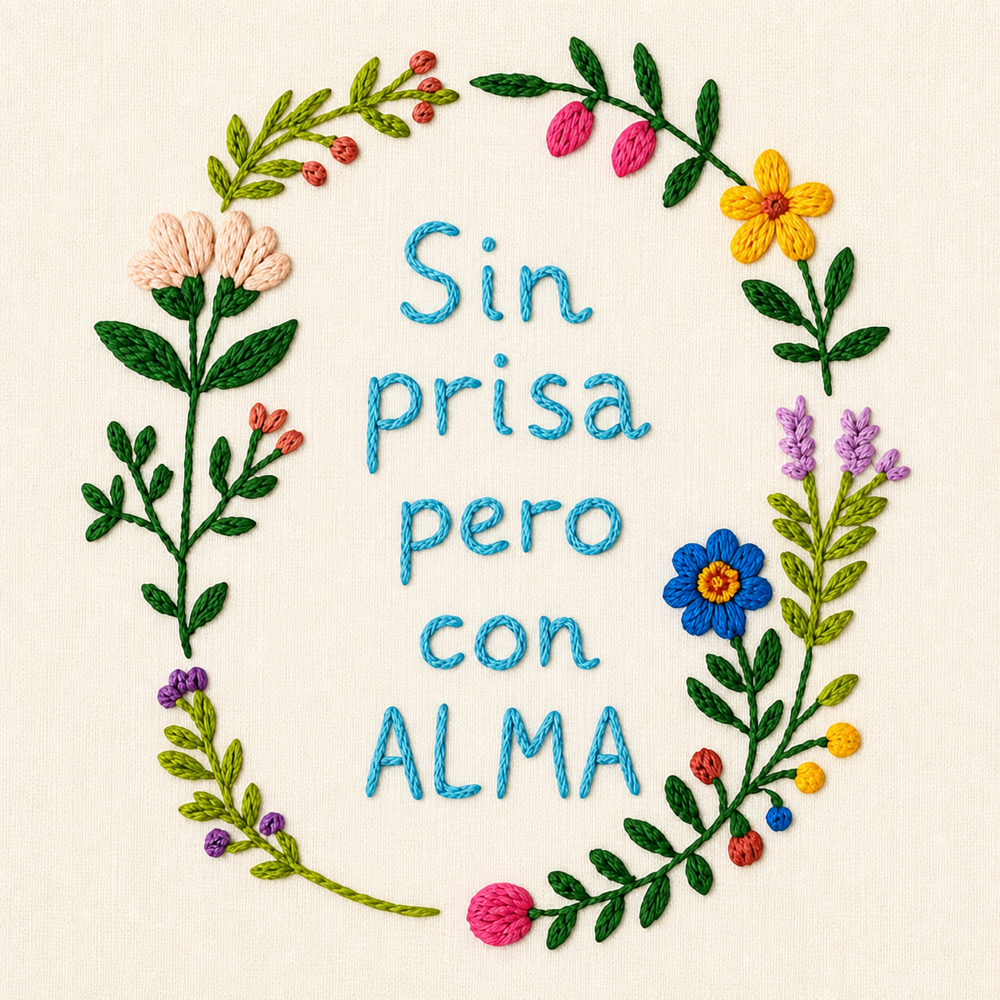
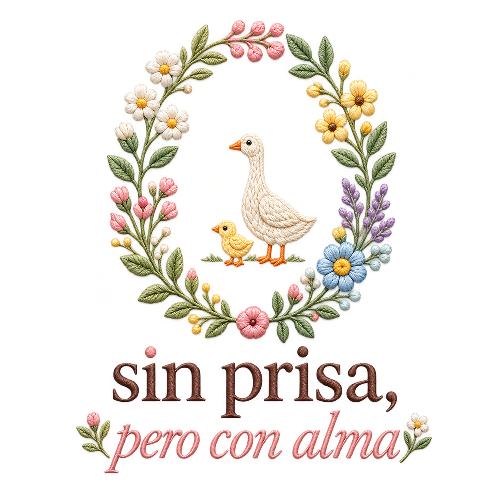
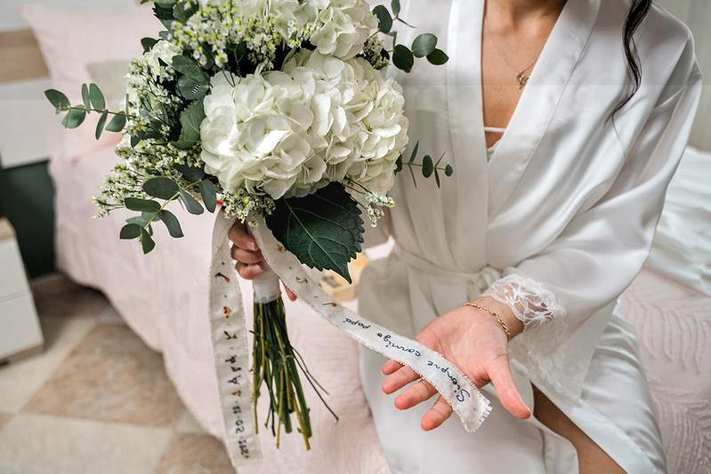
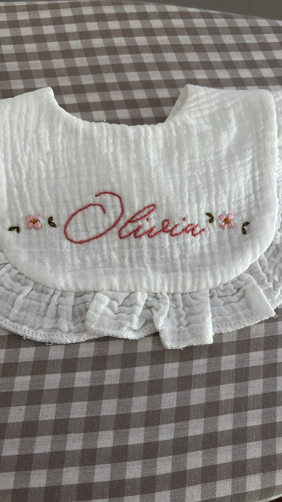

Materiales con sentido
Elegimos tejidos agradables, hilos de calidad y acabados pensados para acompañar el uso real de cada pieza.

sin prisa,pero con alma
La historia detrás del hilo
Sin prisa, pero con alma nace en Jaén del deseo de devolver valor a lo pequeño: un nombre, una fecha, una flor elegida por algo que solo tú conoces.
Aquí cada pieza empieza como empiezan las cosas importantes: escuchando. Después llegan el dibujo, los colores, las pruebas y las puntadas que convierten una idea en algo que se puede tocar y guardar.
No bordamos para llenar estanterías. Bordamos para acompañar recuerdos.
El oficio
Cada diseño se dibuja, se prueba y se borda lentamente sobre tejidos naturales. Las pequeñas variaciones no son errores: son la huella de una pieza que no se ha fabricado en serie.
Trabajamos desde Jaén y enviamos a toda España. Para los encargos, la conversación con quien regala o recibe la pieza forma parte del proceso.

Plazos reales, materiales explicados y precios acordados antes de empezar.
Detrás de cada pedido hay una conversación, no un número anónimo.
Diseñamos para que la pieza pueda usarse, guardarse y heredarse.
Nuestro compromiso
Elegimos tejidos agradables, hilos de calidad y acabados pensados para acompañar el uso real de cada pieza.
No trabajamos en serie. Organizamos cada encargo con un plazo posible para poder cuidar tanto la idea como el remate.
El diseño no se limita a poner un nombre: busca colores, flores y pequeños símbolos que tengan significado para ti.
Diseñamos y bordamos desde Jaén, preparamos cada paquete con cuidado y enviamos a toda España.

¿Tienes algo en mente?
Puedes elegir algo de la colección o contarnos una historia que todavía no tiene forma.